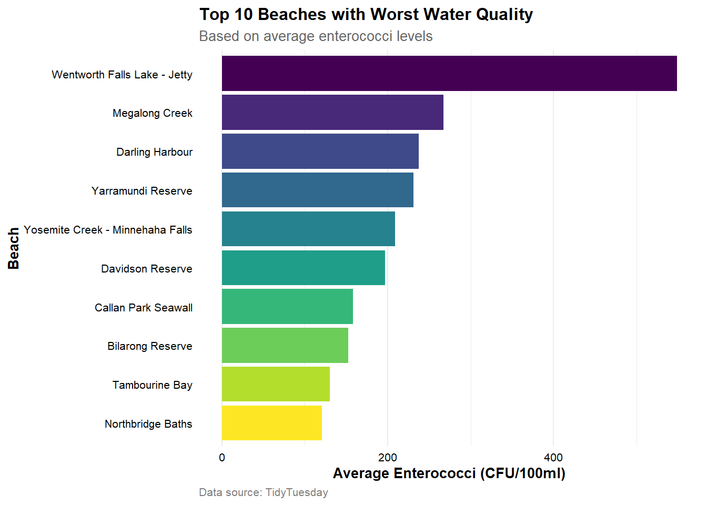
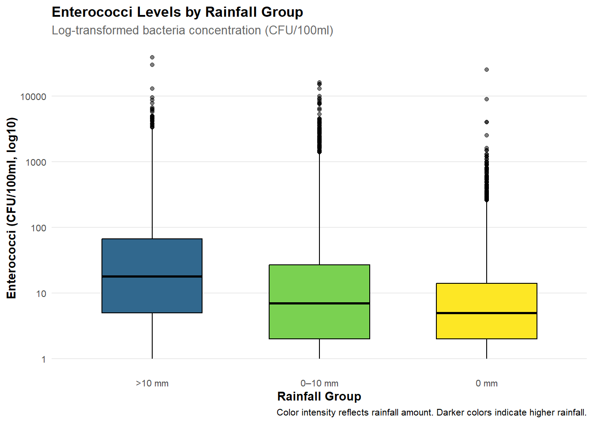

library(tidyverse)
library(viridis)
library(viridisLite)
library(knitr)Sydney Beach Quality and Safety Assessment Report
Load Library
data:
water_quality <- readr::read_csv('https://raw.githubusercontent.com/rfordatascience/tidytuesday/main/data/2025/2025-05-20/water_quality.csv')
weather <- readr::read_csv('https://raw.githubusercontent.com/rfordatascience/tidytuesday/main/data/2025/2025-05-20/weather.csv')start_date <- as.Date("2015-04-28", tz ="Australia/Sydney")
end_date <- as.Date("2025-04-28", tz ="Australia/Sydney")
water_quality <- water_quality %>%
filter(date >= start_date & date <= end_date)
weather <- weather %>%
filter(date >= start_date & date <= end_date)Executive Summary
This report investigates water pollution at public beaches by analysing enterococci levels using environmental and weather data. The findings show that several beaches have extremely high average pollution levels, which poses serious health risks to swimmers. Moreover, enterococci concentrations were significantly higher after rainfall, which suggests that rain events are a strong predictor of poor water quality. We recommend regular monitoring and public reporting of water quality, especially after heavy rainfall.
Introduction
Sydney’s beaches are popular swimming spots, but water quality issues sometimes occur. This report analyzes 10 years (2015-2025) of water test data from beaches and weather data, originally collected by the TidyTuesday project. We focus on Enterococci bacteria levels, which indicate potential health risks.
Beach water quality is significant for health and tourism. Poor water conditions can cause illness and reduce the number of visitors. This analysis helps us understand two key questions:
- Which beaches have the worst water quality?
- When do problems typically occur particularly after rainfall?
By using data science tools, we aim to give clear and useful insights. Our goal is to support better decisions for beach safety and environmental protection.
Methodology
In this project, we aim to find which beaches have the worst water quality in Sydney and whether the water quality becomes worse after rainfall. We use two datasets: water_quality and weather. The water quality dataset records enterococci bacteria levels in colony forming units (CFU) per 100 millilitres of water, temperature, and conductivity at different swim sites. The weather dataset provides daily rainfall data.
First, we calculate the average enterococci level for each beach (swim_site) to identify the most polluted beaches. We use a bar chart (Figure 1) to show the top 10 beaches with the highest average pollution levels.
top_beaches <- water_quality %>%
group_by(swim_site) %>%
summarise(avg_enterococci = mean(enterococci_cfu_100ml, na.rm = TRUE)) %>%
arrange(desc(avg_enterococci)) %>%
slice(1:10)

Second, we explore the relationship between rainfall and water quality. We merge the two datasets by date and then group the data by rainfall level (0 mm, 0–10 mm, >10 mm). We create a table(Table 1) showing the average enterococci count in each rainfall group. We also make a boxplot to show the distribution of bacteria levels across these groups. Due to extreme values and some zeros in enterococci counts, a log10 transformation was applied to improve the visibility of the boxplot(Figure 2).
# In weather dataset, both latitude and longitude have only unique values.
weather <- weather %>%
select(-latitude, -longitude)
# Merge water and weather datasets by date
water_weather <- water_quality %>%
left_join(weather, by = "date")water_weather <- water_weather %>%
mutate(rain_group = case_when(
precipitation_mm == 0 ~ "0 mm",
precipitation_mm <= 10 ~ "0–10 mm",
TRUE ~ ">10 mm"
))rain_table <- water_weather %>%
group_by(rain_group) %>%
summarise(mean_enterococci = mean(enterococci_cfu_100ml, na.rm = TRUE))
kable(rain_table)| rain_group | mean_enterococci |
|---|---|
| 0 mm | 17.64191 |
| 0–10 mm | 52.71743 |
| >10 mm | 167.10027 |
ggplot(water_weather,
aes(x = rain_group,
y = enterococci_cfu_100ml,
fill = rain_group)) +
geom_boxplot(
width = 0.6,
color = "black",
size = 0.5,
outlier.alpha = 0.5 # Outlier transparency
) +
scale_y_log10() +
scale_fill_manual(
values = c("0 mm" = "#FDE725",
"0–10 mm" = "#7AD151",
">10 mm" = "#31688E"),
breaks = c("0 mm", "0–10 mm", ">10 mm")) +
labs(
title = "Enterococci Levels by Rainfall Group",
subtitle = "Log-transformed bacteria concentration (CFU/100ml)",
x = "Rainfall Group",
y = "Enterococci (CFU/100ml, log10)",
caption = "Color intensity reflects rainfall amount. Darker colors indicate higher rainfall."
) +
theme_minimal(base_size = 10) +
theme(
plot.title = element_text(face = "bold", size = 12),
plot.subtitle = element_text(color = "gray40"),
axis.title = element_text(face = "bold"),
legend.position = "none", # Remove legend
panel.grid.major.x = element_blank(), # Remove vertical grid lines
panel.grid.minor = element_blank()
)

Result
From Figure 1, the beach with the highest average pollution level is Wentworth Falls Lake - Jetty, with more than 500 CFU/100ml. This is about twice the level of the second-ranked site, Megalong Creek. The other eight beaches in the top 10 also show high pollution, at average values above 100 CFU/100ml. These results suggest that certain beaches consistently have poor water quality from 2015 to 2025.
The Table 1 shows that beaches with rainfall greater than 10mm had significantly higher enterococci levels compared to those with 0mm rainfall. It suggests a strong relationship between heavy rainfall and increased bacteria concentration. The boxplot in Figure 2 further supports this pattern. The log-transformed enterococci levels are clearly higher in the >10mm group. Besides, the entire box of >10mm group is shifted upward, showing that rainfall likely plays a major role in pollution spikes.
These findings are consistent with prior research that links high bacteria levels with increased illness risk in swimmers, including diarrhea and ear infections (Wade et al., 2012). Similar results were found by Soller et al. (2010), who showed that bacterial concentrations tend to rise after heavy rainfall, increasing the likelihood of gastrointestinal illness.
Conclusion
This study shows that some beaches in Sydney, such as Wentworth Falls Lake - Jetty, have very high levels of enterococci. It can be dangerous for public health because swimming in polluted water increases the risk of getting sick, including diarrhea, ear infections and so on. The data also show that rainfall has a strong influence on water quality. After heavy rain, enterococci levels rise a lot. This means that rainfall is a major reason why beach water becomes unsafe. Overall, the results suggest that many beaches are not always safe for swimming, especially after rain.
Recommendations
To protect public health, the government should test beach water quality more often and make the results easy for the public to access. Warning signs or online alerts can help people know when it is unsafe to swim. It is especially important to avoid swimming after heavy rainfall. In addition, weather forecasts and past data can help predict when beaches are likely to be polluted. This can help create early warning systems and reduce the risk of illness from swimming in dirty water.
Reference
Ackerman, D., & Weisberg, S. B. (2003). Relationship between rainfall and beach bacterial concentrations on Santa Monica Bay beaches. Journal of water and health, 1(2), 85-89.
Colford, J. M., Jr, Schiff, K. C., Griffith, J. F., Yau, V., Arnold, B. F., Wright, C. C., Gruber, J. S., Wade, T. J., Burns, S., Hayes, J., McGee, C., Gold, M., Cao, Y., Noble, R. T., Haugland, R., & Weisberg, S. B. (2012). Using rapid indicators for Enterococcus to assess the risk of illness after exposure to urban runoff contaminated marine water. Water research, 46(7), 2176–2186. https://doi.org/10.1016/j.watres.2012.01.033